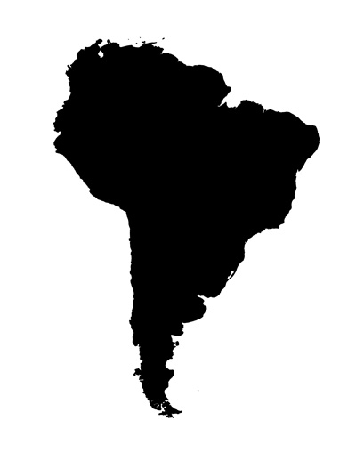
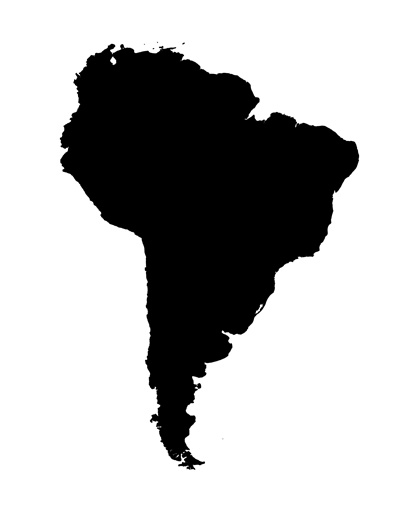
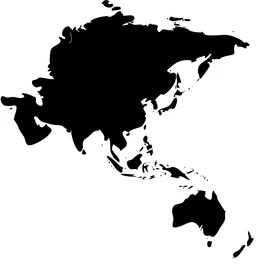
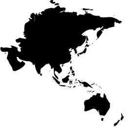
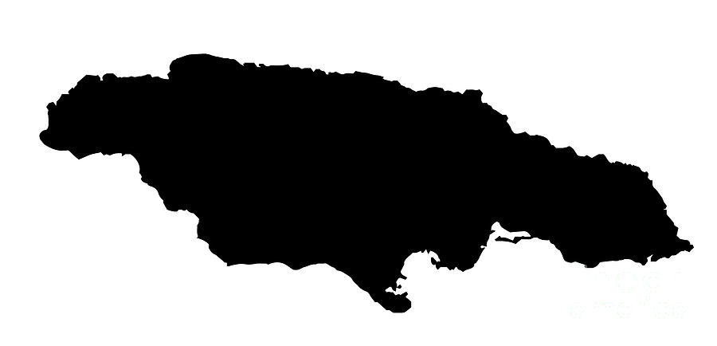
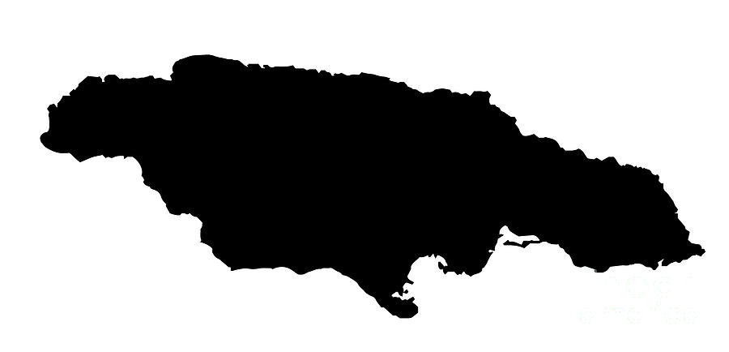

Originating in Central Asia, apples have been cultivated for thousands of years in Asia and Europe and were brought to North America by European colonists.

Tomatoes originated in Western South America and Central America. The Aztecs used them in their cooking by the time the Spanish arrived in the 16th century.
Wild strawberries are native to multiple regions across the Northern Hemisphere, with each region developing its own native species.

Cherries have been enjoyed since ancient times, originating in Europe and regions like Anatolia and the Caucasus.


Raspberries have a long history in Europe and Northern Asia, where they have grown wild and been cultivated for their fruit.

Pomegranates, symbolizing fertility and abundance, originated in regions from Iran to the Himalayas in Northern India.

Watermelon traces its origin to West Africa, where it has been cultivated since ancient times.


Red grapes, part of the vast grape family, trace their origins to the Near East, including regions like present-day Turkey, Armenia, Iran, and Georgia. They have been cultivated for thousands of years, prized for their use in winemaking, fresh consumption, and as dried fruits (raisins). The domestication and cultivation of red grapes played a significant role in ancient civilizations, particularly in the Mediterranean and Middle East, where they became deeply intertwined with cultural and economic activities.


Cranberries, native to North America and parts of Europe, have been valued for their tart flavor and medicinal properties, particularly by Native Americans.


Persimmons, native to China, have a long history of cultivation for their sweet, honey-like flavor, and have been a part of traditional Chinese medicine.


Dragon fruit, with its unique appearance, originated in Southern Mexico and Central America, cherished by indigenous peoples long before it spread globally.
Goji Berries, originating in China, have been used in traditional Chinese medicine and cuisine for thousands of years, praised for their nutritional benefits.
Chokeberries, native to Eastern North America, are known for their rich antioxidant content and have been used by Native Americans for centuries.


Red onions, with their distinct color and slightly sweet flavor, are part of the diverse onion family that originated in Central Asia, Iran, and West Pakistan. These onions have been cultivated for thousands of years, valued both for their culinary versatility and medicinal properties. Over time, they have spread globally and have become a staple in various cuisines, appreciated for the vibrant color and flavor they add to dishes.


Radishes were first cultivated in Southeast Asia before Roman times and were popular across the ancient world for their peppery flavor and ease of growth.


Beets have been consumed since ancient times in the Mediterranean region, initially for their greens, and later for their root.

Boysenberry, a cross between European raspberry, blackberry, American dewberry, and loganberry, was developed in the United States, known for its large size and deep flavor.

Red bell peppers, like all bell peppers, originated in Central and South America, where they have been cultivated for thousands of years. The red variety, which is simply a fully ripe form of the green bell pepper, is known for its sweet flavor and high vitamin content. Bell peppers were spread across the globe by Spanish and Portuguese explorers in the 16th and 17th centuries, quickly becoming integral to many cuisines worldwide.
 

Red potatoes, a variant within the diverse potato species originally from South America, specifically the Andean region, have been cultivated for their unique qualities like red skin and often waxy texture. These potatoes were developed from the rich variety of native Andean potatoes, which were a staple food for the Incan Empire and other indigenous cultures in the region. After the European colonization of the Americas, potatoes, including red varieties, spread globally and became a fundamental crop in many countries.

Turnips have been a staple food in Western Asia and Europe since prehistoric times, valued for their hardiness and nutritional content.

Dates, one of the oldest cultivated fruits, originated in the Middle East and North Africa, an essential food source in these regions for millennia.

Oranges trace their origins to Southeast Asia and northeastern India, with cultivation dating back thousands of years.
Mangos, native to South Asia and particularly India, have been cultivated for over 4,000 years and are deeply embedded in Indian culture and cuisine.
Papayas, native to Mexico and Central America, have been a staple in the diets of the region's indigenous peoples.

Apricots, with their origins in Central Asia and China, have been cultivated since ancient times, known for their sweet and tangy flavor.

Tangerines, a citrus fruit, originated in Southeast Asia and have been cultivated for their sweet and tangy flavor.
Kumquats, small citrus fruits, are native to South Asia and the Asia-Pacific region and are unique for their edible skin.

The loquat, native to Southeastern China, has been cultivated for over a thousand years in its homeland. Known for its sweet and tangy fruit, the loquat has played a significant role in Chinese culture and traditional medicine. The fruit, along with its attractive evergreen leaves, eventually spread to Japan and other parts of the world, becoming popular in many subtropical regions.

Native to Southeast Asia and Indonesia, starfruits are known for their distinctive shape and refreshing taste.

Pineapples originated in South America, possibly Brazil or Paraguay, and were spread globally through exploration and trade.

Peaches originated in Northwest China and have been a part of Chinese culture and cuisine for millennia.

Nectarines, a variant of peaches, originated in China and have been cultivated for their smooth skin and sweet taste.
Jujubes, native to China, have been cultivated for over 4,000 years, prized for their sweet, apple-like flavor and medicinal properties.
Originating in regions like Iran, India, and Africa, cantaloupes have been cultivated for their sweet and juicy flesh for thousands of years.

Carrots, originally cultivated in Central Asia, were quite different in color and form compared to today's varieties, often being purple or white.

Sweet potatoes have been cultivated in Central and South America since prehistoric times, known for their sweet taste and high nutritional value.
Pumpkins are native to North America and were a vital food source for both Native Americans and early European settlers.

Various types of squash, including butternut and acorn, were domesticated in Mesoamerica and were an integral part of ancient diets in the region.
Turmeric, native to South Asia and Southeast Asia, has been used as a spice and medicinal herb for thousands of years.
The kiwi, originally known as the Chinese gooseberry, originated in China before gaining popularity worldwide.


Avocados, native to South-Central Mexico, were a staple in the diet of the region's ancient civilizations and have been cultivated since pre-Columbian times.

Avocados, native to South-Central Mexico, were a staple in the diet of the region's ancient civilizations and have been cultivated since pre-Columbian times.

Green apples, like all apples, originated in Central Asia, particularly in the areas around Kazakhstan. The green varieties, such as Granny Smith, are known for their crisp texture and tart flavor. These apples were selectively bred over centuries for these distinctive characteristics and have become a global staple in both eating and cooking.

Green grapes, part of the diverse family of grapes originally from the Near East (regions like present-day Turkey, Armenia, Azerbaijan, Georgia, Iran), have been cultivated for thousands of years. These grapes, varying in sweetness and size, are used both for eating fresh and for making wine, raisins, and vinegar. The cultivation and trading of grapes played a significant role in the ancient civilizations of the Mediterranean and Middle East.

Honeydews have roots in West Africa and the Middle East, known for their sweet, succulent flesh.
Guavas, native to Central America and Mexico, were an important food source for the indigenous populations before being spread globally.

Pears, cultivated for their sweet and juicy nature, originated in Western China, with evidence suggesting parallel cultivation in Europe.


Developed from wild cabbage in the Eastern Mediterranean and Italy, broccoli was cultivated in Italy since the time of the Roman Empire.

Originating in Persia (modern Iran), spinach was introduced to India and ancient China, where it was known as the "Persian vegetable."
Kale has been cultivated since ancient times in the Eastern Mediterranean and Asia Minor, known for its hardiness and nutritional value.

Lettuce was first cultivated in ancient Egypt for the production of oil from its seeds, eventually leading to the breeding of the leafy vegetable we know today.

Cucumbers originated in India over 3,000 years ago and were prized for their refreshing and hydrating qualities in hot climates.

Zucchini, a type of summer squash, was originally cultivated in Central America and Mexico and brought to Europe by the Spanish.

Peas have been cultivated for thousands of years in the Near East and Mediterranean Basin and were a staple in the medieval European diet.

Asparagus has been used as a vegetable and medicine, owing to its delicate flavor and diuretic properties, since ancient times in the Eastern Mediterranean and Western Asia.

Brussels sprouts, developed from a cabbage ancestor, were cultivated in large quantities in Belgium as early as the 13th century.

Scallions have been cultivated and used in Central Asia and the Middle East for centuries, appreciated for their mild onion flavor.

Bok choy, a type of Chinese cabbage, has been cultivated in China for thousands of years and is a staple in Asian cuisine.
Swiss chard, related to beets, has been grown in the Mediterranean region for centuries, known for its hearty leaves and colorful stems.
Arugula, an aromatic salad green, has been grown in the Mediterranean region since Roman times.

Endive, native to the Mediterranean region, has been appreciated since ancient times for its slightly bitter leaves.
Romaine lettuce, originating from the Mediterranean region, has been a popular leafy vegetable since ancient Roman times.

Mustard Greens, originating from the Himalayan region of India, have been cultivated for their spicy, flavorful leaves for centuries.
Collard Greens, part of the cabbage family, have been cultivated in the Eastern Mediterranean since ancient times.
Native to Central and South America, bell peppers were one of the many New World foods brought back to Europe by explorers in the 15th and 16th centuries.
The artichoke is native to the Mediterranean region and has been cultivated since ancient times for its edible flower buds.

Okra likely originated in West Africa, where it has been cultivated for its edible green pods for centuries.

Cabbage, a member of the Brassica family, has been cultivated in Europe for thousands of years for its dense-leaved heads.
Leeks, native to the Middle East and Mediterranean, have been a staple in the diets of these regions since ancient times.

Celery has been cultivated in the Mediterranean region since ancient times for its aromatic leaves and seeds.
Chayote, a type of squash, is native to Central America and has been part of the indigenous diet since pre-Columbian times.

Watercress, a leafy green, has been consumed since ancient times in Europe and Asia for its peppery flavor.

Soursop, native to the Caribbean and Central America, is known for its distinct flavor and has been used traditionally for medicinal purposes.

Blueberries are indigenous to North America, where they have been consumed by native peoples for centuries.

Blackberries, growing in various regions globally, especially Europe, have been foraged and cultivated for centuries, valued for their rich flavor and nutritional benefits.

Plums have diverse origins, with varieties developing in the Caucasus, Europe, and China, each with unique characteristics.

Figs, one of the oldest cultivated fruits, originated in Western Asia and the Middle East and are celebrated for their sweet taste and unique texture.

Grapes have been cultivated for thousands of years in the Near East, including regions like modern-day Turkey, Armenia, and Iran.

Elderberries, native to Europe, North Africa, and Western Asia, have been used for their medicinal properties and as a food source since ancient times.

Mulberries, native to China, have been cultivated since ancient times, valued for their sweet fruit and leaves used in silkworm cultivation.

Purple cabbage, also known as Red Cabbage with its striking color and robust flavor, is a variant of the common cabbage, which originated in Europe and the Mediterranean region. This vegetable, a member of the Brassica family, has been cultivated since ancient times, with the purple variety being prized for its vibrant color, resulting from a high concentration of anthocyanin pigments. Over centuries, purple cabbage has been used not only as a food source but also for its medicinal properties and even as a natural dye.
Eggplant, native to South and East Asia, has been cultivated in these regions since prehistoric times and was often used in traditional cuisines.

Purple carrots, with their striking color, are believed to be one of the earliest forms of carrots cultivated, with their origins tracing back to Central Asia, specifically regions like Afghanistan. These carrots were originally grown for their medicinal properties and vibrant colors, ranging from deep purple to black. Over centuries, purple carrots spread through the Middle East and the Mediterranean, eventually leading to the development of the orange carrots we are more familiar with today.

Prassion Fruit is native to South America, particularly Brazil, Paraguay, and Argentina, passion fruit is known for its aromatic flavor and was widely used by indigenous tribes.

Acai berries, native to the Amazon Rainforest, have been a vital part of the indigenous diet for centuries, known for their health benefits.
 

Coconuts, found throughout the Indo-Pacific region, have been used by seafaring peoples for millennia, valued for their versatility and nutritional content.
Lychees, valued for their fragrant and sweet flavor, have been cultivated for over 2000 years in Southern China, featured in ancient Chinese literature.
Sapodilla, native to Southern Mexico, Central America, and the Caribbean, is known for its sweet, malty flavor.

Durian, with its distinctive smell, originated in Southeast Asia, particularly in regions like Borneo and Sumatra, and is revered in many Asian cultures.
Originating in Southwestern India, jackfruit is known for its size and unique flavor, playing a significant role in local cuisines.
 

Ugli fruit, a type of tangelo, was developed in Jamaica and is valued for its juicy, tangy flavor, a cross between grapefruit, orange, and tangerine.

Quinces, originating in Southwest Asia, Iran, and Turkey, have been cultivated since ancient times for their fragrant fruit, used in cooking and perfumery.

Loganberry, a cross between blackberry and raspberry, was developed in the United States and is known for its unique flavor.


The potato was first domesticated in the region of modern-day southern Peru and extreme northwestern Bolivia between 8000 and 5000 BC.

Kohlrabi, a member of the cabbage family, has been grown in Europe since Roman times, known for its turnip-like stem.

Garlic has been known to human civilization for thousands of years and was widely used by ancient civilizations for its culinary and medicinal properties in Central Asia and northeastern Iran.

Onions have been cultivated for thousands of years in Central Asia, Iran, and West Pakistan, valued both as food and for their medicinal properties.

Cauliflower, originating in the Eastern Mediterranean, was a popular vegetable in the ancient world and has a long history in Turkey and Italy.
Parsnips, native to Eurasia, were a common staple in the medieval diet, valued for their sweetness and nutritional value.

Jicama, a crispy, sweet root vegetable, has been cultivated in Mexico since pre-Columbian times.

Daikon, a type of radish, has been grown in East Asia for centuries, valued for its mild flavor and versatility.
Yucca, cultivated in South America a staple in South American diets, has been cultivated for its starchy tuberous root.
Taro, a root vegetable with a long history, has been an important food crop in Southeast Asia and Southern India for thousands of years.
Horseradish, native to southeastern Europe and western Asia, has been cultivated since antiquity for its pungent root.
Fennel, native to the Mediterranean, has been used since ancient times for its aromatic seeds and flavorful bulbs.

Corn, or maize, was first domesticated by indigenous peoples in southern Mexico about 10,000 years ago, playing a central role in Native American agriculture.

Yellow bell peppers, like other bell peppers, originated in Central and South America, where they have been cultivated for thousands of years. The yellow variety, which is a fully matured form of the green bell pepper, is known for its sweet, almost fruity flavor and vibrant color. These peppers became globally popular after the Columbian Exchange, adding color and flavor to cuisines around the world.

Yellow beets, also known as golden beets, are a variety of beetroot with a mild, sweet flavor and a vibrant yellow hue. They are believed to have originated in the Mediterranean region, where beets have been cultivated since ancient times for their edible roots and leaves. Over time, selective breeding led to the development of different varieties, including the yellow beet, prized for its unique color and sweeter taste compared to the more common red beet.


Rutabaga, a root vegetable, was first cultivated in Scandinavia and Russia as a hardy, nutritious food source.
Ginger, originating in Southeast Asia, has been cultivated for its medicinal and culinary properties for millennia.

Native to Southeast Asia and Papua New Guinea, bananas are believed to be one of the first fruits cultivated by humans, dating back to at least 5000 BCE.